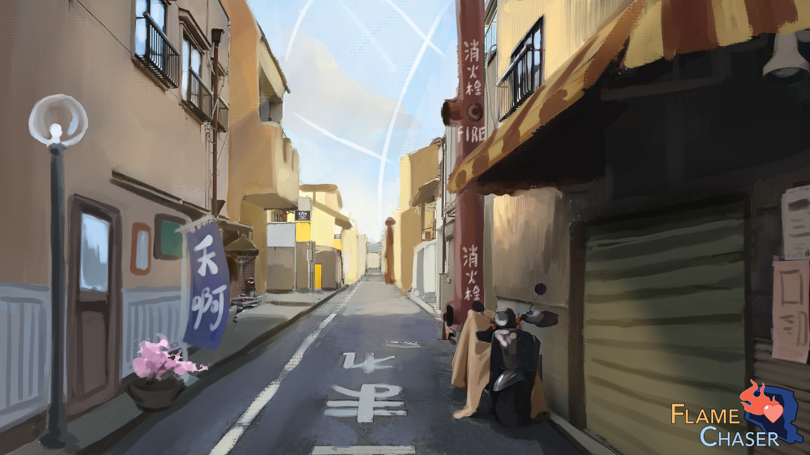
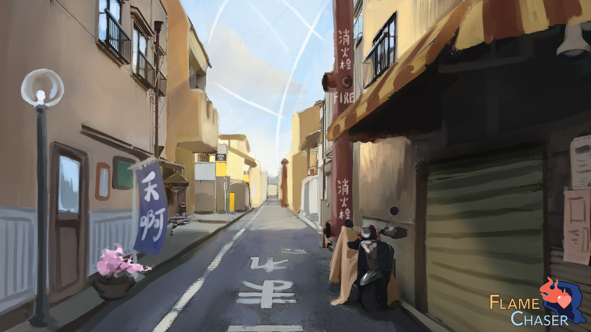

Yurisekai Base
An isolated space colony hidden within an asteroid belt orbiting around an unnamed star. While at a glance it appears to be a small mining outpost, in reality it houses an Iuryis military base that is currently developing a YURI Core that can harness the recently discovered YURI particle.
 
